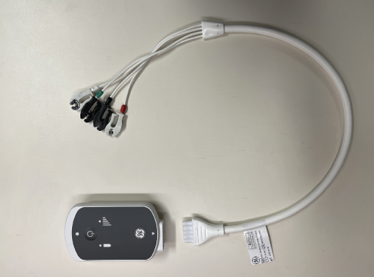

- 00000018WIA30497030GYZ
- id_123749121.5
- Mar 1, 2023 2:22:13 AM
PAC Assembly Leakage Current Test
Prerequisites
| Required persons | Preliminary requirements | Procedure | Finalization |
|---|---|---|---|
| 1 | Not Applicable | 10 minutes | Not Applicable |
| Item | Quantity | Effectivity | Part number | Manufacturer |
|---|---|---|---|---|
| Fluke ESA612 Electrical Safety Analyzer | 1 | - |
5453348 | - |
| ||||||||
About this task
Overview
When Safety Analyzer Kits are sent in for calibration, the units are being upgraded with Fluke ESA612 Safety Analyzer.
Data Sheet for Recording Leakage Current Data
About this task
Use the supplied data sheet to record the leakage current data. Table 4 is a reference of what is contained on the data sheet. Print the form. 2087555.pdf
| LEAD SELECT POSITION | METER READING NORMAL POSITION (microamps) | METER READING REVERSE POSITION (microamps) |
|---|---|---|
| Patient (Lead to Ground) Leakage Current | ||
| Right Leg (RL) | ||
| Right Arm (RA) | ||
| Left Arm (LA) | ||
| Left Leg (LL) | ||
| Patient (Lead to Lead) Auxiliary Current | ||
| RL | ||
| RA | ||
| LA | ||
| LL | ||
| M.A.P. (Isolation Tests) | ||
| ALL LEADS M.A.P. Test | ||
Using Fluke ESA612 Safety Analyzer
Setting up Fluke ESA612 Safety Analyzer
Procedure
DANGER 
Follow below steps to setup the analyzer:Notice (For wired gating: )- Plug the analyzer into a power source in the magnet room which allows access to the Patient Monitor Accessory hook on the left side of the magnet enclosure, while staying as far away as possible from the magnet.
The Patient Monitor Accessory hook is on the left side of the magnet, regardless of system version. The example shown below is an MR450 system.
Figure 1. Patient Monitor Accessory Hook Location (Example)  Note:
Note:At facilities with 110-120 VAC, a fault error may appear when you power the meter on. Press F4 OK to clear the error, and continue.
- At the Patient Monitor Accessory hook, connect the Patient Lead cable and the Cardiac Lead Set at the ECG connector.
The ECG connector is round and is labeled with “ECG” or a heart symbol. The example shown below is an MR450w system.
Figure 2. ECG Connector (Example) 
(For wireless gating: )- Plug the analyzer into a power source away from magnet.
- Connect one end of the ECG cable to Physiological Acquisition Transceiver (PAT).Note: The Test should be carried out in the bay with wireless installed and powered up. The test should be carried out when connected to PAWS. The PAT LED indicator must be solid green when they are connected.
Figure 3. Wireless gating 
- Plug the analyzer into a power source in the magnet room which allows access to the Patient Monitor Accessory hook on the left side of the magnet enclosure, while staying as far away as possible from the magnet.
- Connect the ECG leads to the Fluke BJ2ECG Input Jack Adapter,
matching:
-
Right Arm (RA) lead to RA Input Jack Adapter
-
Left Leg (LL) lead to LL Input Jack Adapter
-
Left Arm (LA) lead to LA Input Jack Adapter
-
Right Leg (RL) lead to RL Input Jack Adapter
The fifth Input Jack Adapter is not used for these tests.
Figure 4. Fluke ESA612 Safety Analyzer 
-
Testing Lead to Lead with the Fluke ESA612 Safety Analyzer
Procedure
Testing Lead to Ground with the Fluke ESA612 Safety Analyzer
Procedure
Finalization
Procedure
DANGER
Disconnect the Cardiac Lead Set from the analyzer.Notice - Remove the Patient Lead cable from the ECG connector.
- Unplug the analyzer.